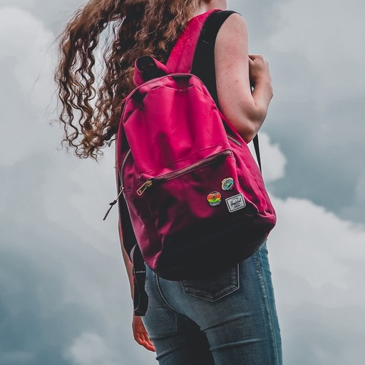

DreamBlend: Advancing Personalized Fine-tuning
of Text-to-Image Diffusion Models
WACV 2025
Abstract
Given a small number of images of a subject, personalized image generation techniques can fine-tune large pre-trained text-to-image diffusion models to generate images of the subject in novel contexts, conditioned on text prompts. In doing so, a trade-off is made between prompt fidelity, subject fidelity and diversity. As the pre-trained model is fine-tuned, earlier checkpoints synthesize images with low subject fidelity but high prompt fidelity and diversity. In contrast, later checkpoints generate images with low prompt fidelity and diversity but high subject fidelity. This inherent trade-off limits the prompt fidelity, subject fidelity and diversity of generated images. In this work, we propose DreamBlend to combine the prompt fidelity from earlier checkpoints and the subject fidelity from later checkpoints during inference. We perform a cross attention guided image synthesis from a later checkpoint, guided by an image generated by an earlier checkpoint, for the same prompt. This enables generation of images with better subject fidelity, prompt fidelity and diversity on challenging prompts, outperforming state-of-the-art fine-tuning methods.
The Fine-tuning Trade-off
Early in fine-tuning, the model can follow the text prompt but has not yet learned the subject faithfully. Later checkpoints learn the subject’s appearance, but can overfit its training poses and environments. The following generations show this progression for a single subject.

Prompt: “a backpack* on a cobblestone street”
5 steps: high prompt fidelity and diversity, but low subject fidelity.
Method: Cross-attention Guided Image Synthesis
DreamBlend combines two checkpoints from the same fine-tuning run: an early guidance model that follows the prompt and a later edit model that has learned the subject’s appearance. Cross-attention guidance helps the edit model retain the guidance model’s scene layout while improving subject fidelity.
1. Generate a reference
Use the guidance model to generate an image for the prompt. Save its cross-attention maps, which show where each text token attends as the image takes shape.
2. Guide the edit model
Start the edit model from the same random noise and prompt. At each generation step, adjust its noisy image representation so its attention maps more closely match the reference maps.
3. Produce the final image
The edit model progressively denoises the guided representation, combining the reference layout with its learned subject appearance. Both models’ weights remain fixed.
See Algorithm 1 for the full procedure.
How cross-attention guidance helps
The 5-step guidance model follows the prompt but has not learned the backpack’s appearance. The 250-step edit model captures the subject but loses the cobblestone street. Cross-attention guidance (CAG) restores the prompt-aligned layout while retaining subject identity. All three generations use the same starting noise, prompt, classifier-free guidance, and 50 DDIM sampling steps.
Literal prompt: “a sks backpack on a cobblestone street”
Swipe horizontally to compare all three checkpoint conditions.
More Results
Across different subjects and prompts, DreamBlend preserves the layout of an underfit reference image while incorporating the subject identity learned by the later checkpoint. Choose a scene to compare the input subject, the two checkpoints, and the guided result.
Input subject
Underfit (guidance)
Overfit (edit)
DreamBlend (ours)
Prompt: “a bowl* on the beach”
Generalization
The approach also applies to other backbones and fine-tuning methods with cross-attention, to multiple personalized concepts, and to personalized editing of real images.
SDXL + LoRA
Input subject
Underfit
Overfit
DreamBlend
SD 1.5 + Custom Diffusion
Input subject
Underfit
Overfit
DreamBlend
SD 1.4 + Custom Diffusion · Two personalized concepts
Input subjects
Underfit
Overfit
DreamBlend
Personalized editing of a real image
Personalized subject: cat*
Real image
Edited image
Talk
DreamBlend: Advancing Personalized Fine-tuningof Text-to-Image Diffusion ModelsWatch the talk on YouTube ↗
BibTeX
@InProceedings{Ram_2025_WACV,
title={DreamBlend: Advancing Personalized Fine-Tuning of
Text-to-Image Diffusion Models},
author={Ram, Shwetha and Neiman, Tal and Feng, Qianli and
Stuart, Andrew M and Tran, Son and Chilimbi, Trishul A},
booktitle={Proceedings of the Winter Conference on Applications of Computer Vision (WACV)},
month={February},
year={2025},
pages={3614--3623},
url={https://openaccess.thecvf.com/content/WACV2025/html/Ram_DreamBlend_Advancing_Personalized_Fine-Tuning_of_Text-to-Image_Diffusion_Models_WACV_2025_paper.html}
}